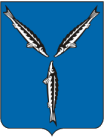

Saratov is one of the most beautiful cities, standing on the banks of the Volga River.
The city is located on the bank of the Volga River, in the center of the vast plain of European Russia.
The Saratov region is one of the most developed and densely populated areas of Russia.